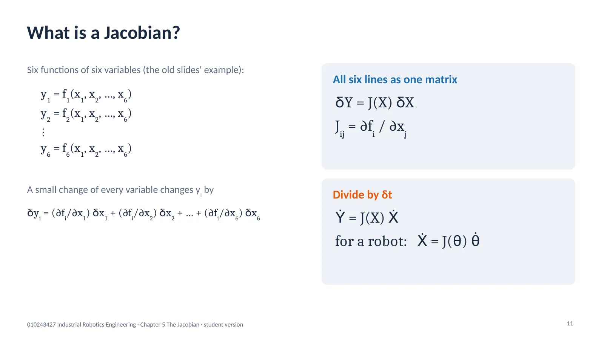
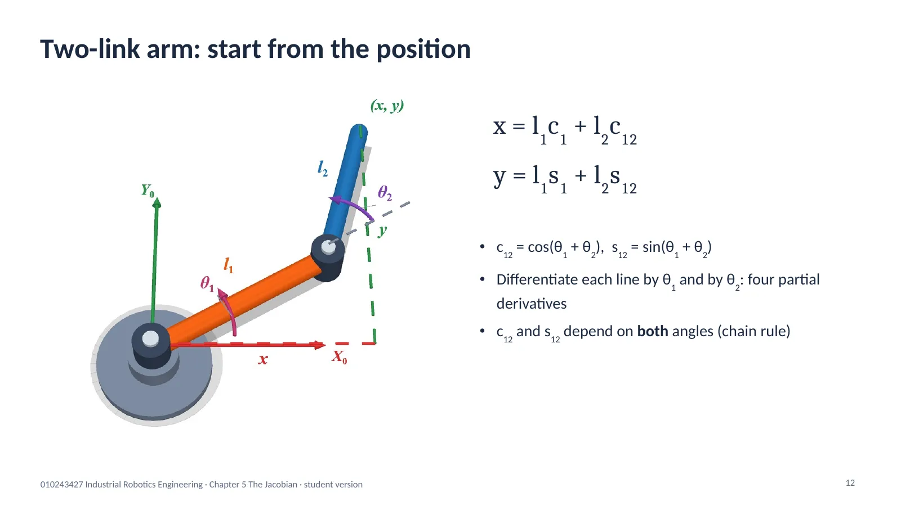
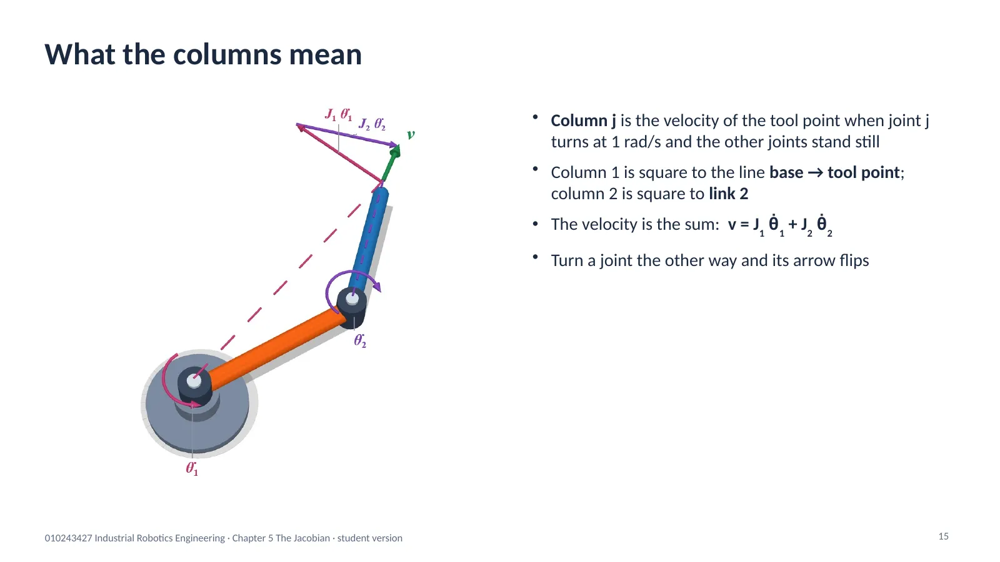
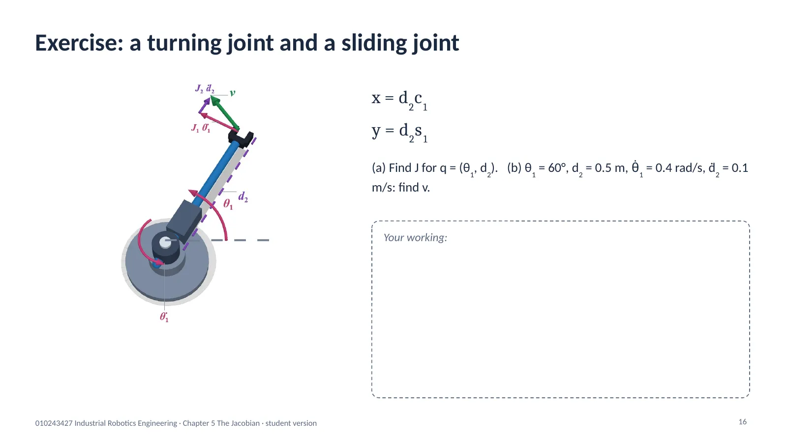
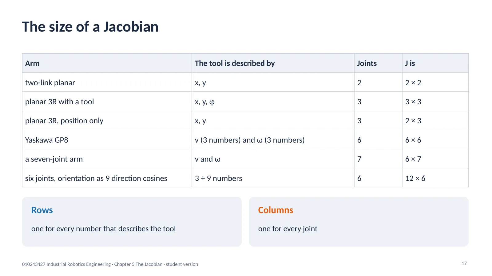
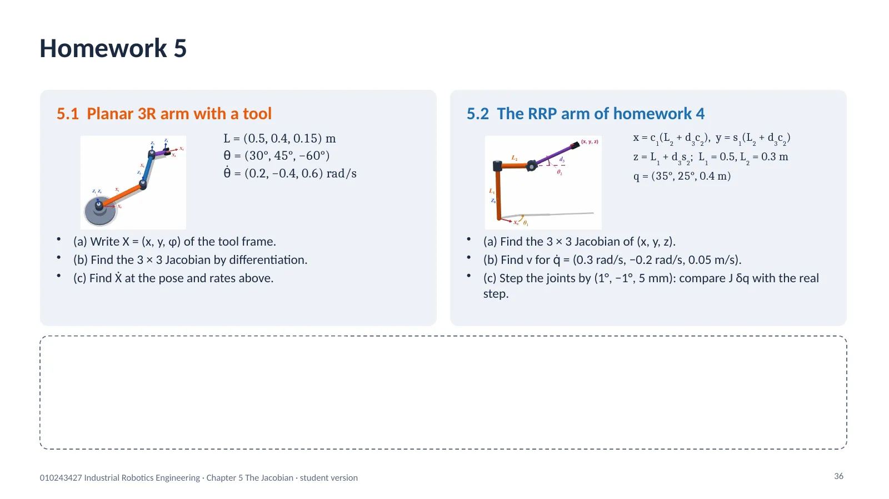

หน้า 5.1 สร้างก้าวของปลายแขนจากลูกศรของแต่ละข้อต่อ หน้านี้หาลูกศรเหล่านั้นด้วยการคำนวณ: จาโคเบียน (Jacobian) คือเมทริกซ์ของอนุพันธ์ย่อย (partial derivative) ของสมการตำแหน่งเทียบกับค่าข้อต่อทีละตัว เราจะทำแขนสองก้านทีละบรรทัดพร้อมตัวเลข อ่านความหมายของแต่ละคอลัมน์ ทำแขนที่มีข้อต่อหมุนกับข้อต่อเลื่อน (RP: revolute–prismatic) ดูว่าจาโคเบียนมีกี่แถวกี่คอลัมน์ แล้วจบด้วยการบ้านชุดที่ 5 หน้านี้ครอบคลุมสไลด์หน้า 11–17 และ 36 มี 5 โจทย์
Page 5.1 built the step of the tool point from one arrow per joint. This page works those arrows out: the Jacobian is the matrix of partial derivatives of the position equations by the joint values, one at a time. We do the two-link arm line by line with numbers, read what each column means, do an arm with a turning joint and a sliding joint (RP: revolute–prismatic), see how many rows and columns a Jacobian has, and finish with homework 5. This page covers slides pp. 11–17 and 36, with 5 problems.


ลูกศรสีชมพูคือส่วนของข้อต่อ 1 (J₁θ̇₁) ลูกศรสีม่วงคือส่วนของข้อต่อ 2 (J₂θ̇₂) ต่อกันแล้วได้ความเร็วของปลายแขน v สีเขียว เส้นประจากข้อต่อถึงปลายแขนคือรัศมีที่ปลายแขนหมุนรอบข้อต่อนั้น ลูกศรของข้อต่อจึงตั้งฉากกับเส้นประของตัวเอง (ลูกศรยาว 0.8 m ต่อความเร็ว 1 m/s)
The pink arrow is the share of joint 1 (J₁θ̇₁), the purple one the share of joint 2 (J₂θ̇₂); head to tail they give the velocity of the tool point, v, in green. The dashed line from a joint to the tool point is the radius the tool point swings on about that joint, so each joint's arrow is square to its own dashed line (0.8 m of arrow for 1 m/s).



หน้านี้ตรวจให้เฉพาะตัวเลขของคำตอบ วิธีทำของการบ้านชุดนี้อธิบายในห้องเรียน
This page checks the numbers only; the worked answers of this homework are discussed in class.